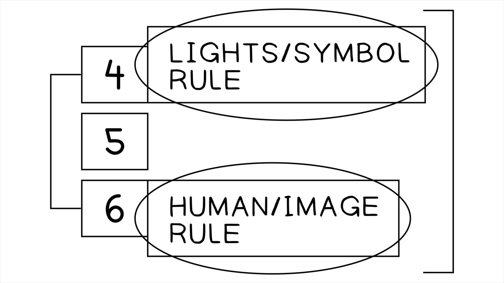

Esta coleção de oráculos interrompe a predição de um refugiado vindo de Jerusalém (Ez 24:25-27) e a sua chegada para anunciar a queda da cidade (Ez 33:21-23). No entanto, todos esses oráculos datam precisamente do período de tempo entre a morte da esposa de Ezequiel (Ez 24:1, jan. 588 A.E.C.) e a vinda do refugiado três anos depois (Ez 33:21, jan. 585 A.E.C.). Além disso, esta coleção de materiais mostra todos os sinais de uma ordenação literária intencional e elegante. Os 18 oráculos são organizados em uma simetria única por um padrão de setes e uma distribuição uniforme de quantidades de palavras. Há oráculos contra sete nações, as duas finais (Tiro e Sidom juntas, depois o Egito) recebendo sete oráculos cada.This collection of oracles interrupts the prediction of a refugee coming from Jerusalem (Ezek. 24:25-27) and his arrival to announce the city’s downfall (Ezek. 33:21-23). However, these oracles all date to precisely the time period between the death of Ezekiel’s wife (Ezek. 24:1, Jan. 588 B.C.E.) and the coming of the refugee three years later (Ezek. 33:21, Jan. 585 B.C.E.). Moreover, this collection of materials shows all the signs of an intentional and elegant literary ordering. The 18 oracles are organized in a unique symmetry by a pattern of sevens and an even distribution of word amounts. There are oracles against seven nations, the final two (Tyre and Sidon together, then Egypt) receiving seven oracles each.
Localizado precisamente no meio deste material em termos de contagem de palavras (nações 1-6 têm 97 versículos dedicados a elas; nação 7 tem 97 versículos também), encontramos um oráculo curto (Ez 28:25-26) dirigido não às nações, mas sim a Israel e ao seu status entre as nações depois que elas são julgadas.Located precisely in the middle of this material in terms of word count (nations 1-6 have 97 verses dedicated to them; nation 7 has 97 verses as well), we find a short oracle (Ezek. 28:25-26) directed not toward the nations, but rather toward Israel and its status among the nations after they are judged.
O oráculo central de 28:25-26 foi deliberadamente colocado como o fulcro deste material, deixando claro que os oráculos de Ezequiel contra as nações não são principalmente uma expressão de ódio tribal, mas sim parte do objetivo retórico de Ezequiel de abrir caminho para os oráculos de esperança que estão adiante nos capítulos 34-48. Se Yahweh está contra essas nações ao redor de Israel, então por implicação ele ainda está a favor do seu povo da aliança. No entanto, o Israel pelo qual ele é “a favor” é o Israel purgado e refinado que passou pelo juízo ardente dos capítulos 12-24.The center oracle of 28:25-26 has been deliberately placed as the fulcrum of this material, making it clear that Ezekiel’s oracles against the nations are not primarily an expression of tribal hatred, but rather part of Ezekiel’s rhetorical goal to pave a way for the oracles of hope that lie ahead in chapters 34-48. If Yahweh is against these nations around Israel, then by implication he is still for his covenant people. However, the Israel he is “for” is the purged and refined Israel that has come through the searing judgment of chapters 12-24.
Block, Daniel (1998). The Book of Ezekiel, Chapters 25-48 (The New International Commentary on the Old Testament). Eerdmans.Block, Daniel (1998). The Book of Ezekiel, Chapters 25-48 (The New International Commentary on the Old Testament). Eerdmans.
Yahweh está em ação nos assuntos e eventos de nações que não envolvem Israel (Babilônia, Tiro e Egito, ver Ez 29:17-20). Yahweh supervisiona os assuntos das nações para mover adiante o seu plano redentor particular em e através de Israel (a Babilônia se torna a ferramenta involuntária de Yahweh, ver Ez 21:23-29).Yahweh is at work in the affairs and events of nations that do not involve Israel (Babylon, Tyre, and Egypt, see Ezek. 29:17-20). Yahweh oversees the affairs of nations to move forward his particular redemptive plan in and through Israel (Babylon becomes Yahweh’s unwitting tool, see Ezek. 21:23-29).
As acusações de Ezequiel são contra os mesmos comportamentos pelos quais ele acusa Israel: violência, idolatria e auto-exaltação.Ezekiel’s accusations are against the same behaviors for which he accuses Israel: violence, idolatry, and self-exaltation.
A frase, “eles/vocês saberão que eu sou Yahweh” ocorre com a maior densidade nesta seção do livro (23x nestes sete capítulos), e é paralela ao Israel que vem a “conhecer Yahweh” através do juízo e da restauração.The phrase, “they/you will know that I am Yahweh” occurs with greatest density in this section of the book (23x in these seven chapters), and is parallel to Israel’s coming to “know Yahweh” through judgment and restoration.
Este tema é a única dica em Ezequiel de algum futuro redentivo para as nações; a maior preocupação de Yahweh é pela sua própria reputação e status entre as nações (Ez 36:18-21).This theme is the only hint in Ezekiel of some redemptive future for the nations; Yahweh’s greatest concern is for his own reputation and status among the nations (Ezek. 36:18-21).
“Não estamos lidando meramente com profecias que eram algum tipo de conforto para Israel na sua perda e desorientação, mas com ações de Deus no palco da história humana que foram destinadas a serem reveladoras. As pessoas veriam e saberiam algo sobre o Deus vivo através de tudo o que é falado aqui. O propósito desses oráculos não era atiçar o nacionalismo israelita, mas imaginar o próximo estágio da missão de longo prazo de Deus de ser universalmente conhecido entre as nações do mundo.”“We are dealing not merely with prophecies that were some kind of comfort to Israel in their loss and disorientation, but with actions of God on the stage of human history that were intended to be revelatory. People would see and know something about the living God through all that is spoken of here. The purpose of these oracles was not to fan Israelite nationalism, but to envisage the next stage of God’s long-term mission of being universally known among the nations of the world.”
Wright, Christopher J.H. (2001). The Message of Ezekiel: A New Heart and a New Spirit. IVP Academic. 233.Wright, Christopher J.H. (2001). The Message of Ezekiel: A New Heart and a New Spirit. IVP Academic. 233.
Ezequiel 25 é uma sucessão rápida de oráculos contra as nações ao redor de Israel, indo no sentido horário a partir do norte: Amom (25:1-7), Moabe (25:8-11), Edom (25:12-14) e Filístia (25:15-17).Ezekiel 25 is a rapid succession of oracles against the nations surrounding Israel, going clockwise from the north: Ammon (25:1-7), Moab (25:8-11), Edom (25:12-14), and Philistia (25:15-17).
Três dessas nações tinham laços de parentesco com Israel (Amom e Moabe sendo conectados a Abraão através de Ló, ver Gn 19:30-38; Edom conectado a Esaú, ver Gn 36). Todas as três tinham uma história de conflito e aliança incômoda com Israel. No entanto, no tempo de Ezequiel, todas as quatro se uniram em rebelião contra a Babilônia (ver Jr 27). Quando a Babilônia escolheu saquear Jerusalém como um exemplo para outros (Ez 21:21-29 retrata o “cara-ou-coroa” de Nabucodonosor sobre qual cidade capital destruir), todos os “aliados” se voltaram contra Jerusalém em zombaria (Moabe, Amom, Filístia) ou traição e violência total (Edom, ver Ob 1:14).Three of these nations had kinship ties to Israel (Ammon and Moab being connected to Abraham through Lot, see Gen. 19:30-38; Edom connected to Esau, see Gen. 36). All three had a history of conflict and uneasy alliance with Israel. However, in the time of Ezekiel, all four had banded together in rebellion against Babylon (see Jer. 27). When Babylon chose to sack Jerusalem as an example to others (Ezek. 21:21-29 depicts Nebuchadnezzar’s “coin-toss” about which capital city to destroy), all the “allies” turned on Jerusalem in mockery (Moab, Ammon, Philistia) or outright betrayal and violence (Edom, see Obad. 1:14).
Esses oráculos, que têm paralelos em Jeremias (Amom, Jr 49:1-6; Moabe, Jr 48:1-47; Edom, Jr 49:7-22; e Filístia, Jr 47:1-7), enfatizam que nações em tão estreita proximidade com o conhecimento de Yahweh enfrentarão a sua justiça pela sua traição e maldade.These oracles, which have parallels in Jeremiah (Ammon, Jer. 49:1-6; Moab, Jer. 48:1-47; Edom, Jer. 49:7-22; and Philistia, Jer. 47:1-7), emphasize that nations in such close proximity to the knowledge of Yahweh will face his justice for their betrayal and evil.
Cada oráculo começa com a mesma expressão exata: “assim diz o Senhor Yahweh” (Ez 26:1, 7, 15; 27:1; 28:1; 28:11; 28:20).Each oracle begins with the same exact expression: “thus says Lord Yahweh” (Ezek. 26:1, 7, 15; 27:1; 28:1; 28:11; 28:20).
Tiro era a capital comercial e marítima dos fenícios e era parceira comercial de longa data com Israel em bons termos (1 Rs 5). A cidade era um castelo de muralhas altas em uma grande ilha na costa do Líbano moderno, e o seu porto possuía a maior frota de navios mercantes do mundo antigo. Eles comercializavam até a Espanha, a Grã-Bretanha e a Grécia, e assim Tiro era conhecida como um centro de riqueza opulenta. Esses oráculos focam na traição de Tiro contra Israel no período babilônico, bem como no seu pesado domínio econômico e na corrupção social que resultou.Tyre was the trading and maritime capital of the Phoenicians and was a long-time trading partner with Israel on good terms (1 Kgs. 5). The city was a high-walled castle on a large island just off the coast of modern Lebanon, and its harbor boasted the largest fleet of trading ships in the ancient world. They traded as far as Spain, Britain, and Greece, and so Tyre was known as a center of opulent wealth. These oracles focus on the treachery of Tyre against Israel in the Babylonian period, as well as its heavy economic dominance and the social corruption that resulted.
O conhecimento de Ezequiel do comércio internacional é notável e constrói um retrato de riqueza que leva à arrogância e à presunção.Ezekiel’s knowledge of international trade is remarkable and builds up a portrait of wealth leading to arrogance and hubris.
Em 27:26-27, o navio é remado para o mar apenas para ser inundado por uma tempestade gigantesca (conduzida por um “vento leste,” o mesmo de Êx 14:21!). O navio afunda na costa diante de uma multidão internacional de espectadores e enlutados (27:28-32) que começam a cantar um lamento em seu nome (27:33-36).In 27:26-27, the ship is rowed out to sea only to be swamped by a gigantic storm (driven by an “east wind,” same as Exod. 14:21!). The ship sinks offshore in view of an international crowd of spectators and mourners (27:28-32) who begin to sing a lament on its behalf (27:33-36).
Este capítulo (Ez 27:1-36) foi um recurso importante para a descrição do vidente João da riqueza e corrupção da Babilônia/Roma em Apocalipse 18. A conexão parece ter sido desencadeada pela conexão de Ezequiel da grande riqueza levando à grandiosa auto-exaltação divina dos líderes de Tiro (Ez 28:1-2, 6-9) de uma maneira semelhante à representação de Isaías da Babilônia (Is 47:7-11).This chapter (Ezek. 27:1-36) was a major resource for John the visionary’s description of the wealth and corruption of Babylon/Rome in Revelation 18. The connection seems to have been triggered by Ezekiel’s connection of great wealth leading to the grandiose divine self-exaltation of Tyre’s leaders (Ezek. 28:1-2, 6-9) in a way similar to Isaiah’s depiction of Babylon (Isa. 47:7-11).
Em 28:1-10, o foco de Ezequiel muda da nação para o seu rei (Etbaal III, nomeado em homenagem ao pai de Jezabel com quem Acabe fez uma aliança 200 anos antes, 1 Rs 16:31).In 28:1-10, Ezekiel’s focus turns from the nation to its king (Ethbaal III, named after Jezebel’s father with whom Ahab made an alliance 200 years earlier, 1 Kgs. 16:31).
Ele retrata a mentalidade do rei como iludida com sonhos de status divino (28:1-2). Enquanto os reis egípcios comumente pensavam de si mesmos como divinos, esta não era uma afirmação feita por nenhum líder cananeu conhecido. Provavelmente Ezequiel interpreta o comportamento arrogante do rei como uma afirmação de agir no lugar de Deus, impulsionado pela sua influência e domínio econômico (28:3-5).He depicts the mindset of the king as deluded with dreams of divine status (28:1-2). While Egyptian kings commonly thought of themselves as divine, this was not a claim made by any known Canaanite leaders. Likely Ezekiel interprets the arrogant behavior of the king as a claim to act in the place of God, driven by his economic influence and dominance (28:3-5).
Tradução e Design Literário por Tim Mackie para BibleProject Classroom: Ezequiel (2021).Translation and Literary Design by Tim Mackie for BibleProject Classroom: Ezekiel (2021).
Em 28:11-19, as metáforas da reivindicação divina do rei (28:1-2) são desenvolvidas em uma visão metafórica completa (típica de Ezequiel) usando tradições israelitas (e talvez outras mesopotâmicas) das origens primevas da humanidade.In 28:11-19, the metaphors of the king’s divine claim (28:1-2) are developed into a full-blown metaphorical vision (typical of Ezekiel) using Israelite (and perhaps other Mesopotamian) traditions of the primeval origins of humanity.
Há duas versões alternativas deste oráculo preservadas nas testemunhas textuais, cada uma afirmando coisas diferentes sobre o rei, ambas relacionadas aos temas principais da narrativa do Éden em Gênesis 2-3.There are two alternate versions of this oracle preserved in the textual witnesses, each asserting different things about the king, both related to the main themes of the Eden narrative in Genesis 2-3.
As diferenças são marcadas com itálico, e as adições são colocadas entre colchetes em negrito.Differences are marked with italics, and additions are bracketed in bold.
As diferenças são marcadas com itálico, e as adições são colocadas entre colchetes em negrito.Differences are marked with italics, and additions are bracketed in bold.
O rei de Tiro é o destinatário explícito em 28:12 e também no oráculo precedente de 28:1-10, onde ele é chamado de “chefe de Tiro” (נגיד צר).The king of Tyre is the explicit addressee in 28:12 and also in the preceding oracle of 28:1-10, where he is called “chief of Tyre” (נגיד צר).
Ezequiel usa regularmente representações alegóricas e metafóricas de reis a fim de comunicar mais plenamente as suas falhas e a ameaça que representam para a ordem cósmica.Ezekiel regularly uses allegorical and metaphorical portrayals of kings in order to more fully communicate their failures and the threat they pose to the cosmic order.
Em 28:1-10, no capítulo 17 e no capítulo 19, os reis finais de Judá são leões e videiras.In 28:1-10, chapter 17, and chapter 19, the final kings of Judah are lions and vines.
No capítulo 29, Faraó é um dragão do mar (tannin, תנין) e no capítulo 32, ele é comparado a um leão e a um dragão do mar.In chapter 29, Pharaoh is a sea-dragon (tannin, תנין) and in chapter 32, he is compared to a lion and a sea-dragon.
No capítulo 31, Faraó é comparado à Assíria, que é retratada como uma árvore cósmica do jardim do Éden.In chapter 31, Pharaoh is likened to Assyria, who is portrayed as a cosmic tree of the garden of Eden.
A versão representada pela Septuaginta retrata o rei de Tiro como uma figura de Adão, o sacerdote-real primordial no jardim do Éden que foi feito para representar perfeitamente o criador (“selo proporcionado” é uma metáfora para a imagem de Elohim em Gn 1:26-28).The version represented by the Septuagint depicts the king of Tyre as an Adam figure, the primal royal-priest in the garden of Eden who was made to perfectly represent the creator (“proportioned seal” is a metaphor for the image of Elohim in Gen. 1:26-28).
As joias listadas em 28:13 são claramente tiradas do peitoral do sumo sacerdote. O texto da Septuaginta tem 12 das 12 pedras preciosas usadas pelo sumo sacerdote de Israel, o texto massorético tem apenas 9 das 12 (ver Êx 28:17-20).The jewels listed in 28:13 are clearly drawn from the high-priestly breastplate. The Septuagint text has 12 of the 12 gemstones worn by Israel’s high priest, the Masoretic text has only 9 of the 12 (see Exod. 28:17-20).
A ligação entre o sumo sacerdote (que era uma figura real com uma coroa) e o ’adam do Éden é construída sobre o tema bíblico central dos humanos como a imagem representativa de Elohim. O sacerdote é uma imagem da humanidade ideal, trabalhando no jardim ritual e representando a humanidade diante de Deus e representando o governo e a presença de Deus na criação. Observe que em outros lugares de Ezequiel, tanto o Éden quanto o templo são associados a altas montanhas, um rio eterno e vida abundante (ver Ez 40:1-3, 47:1-12; Jl 3:17-18; Zc 14:8; Sl 46:4).The link between the high priest (who was a royal figure with a crown) and the Eden ’adam is built on the core biblical theme of humans as the representative image of Elohim. The priest is an image of ideal humanity, working in the ritual garden and representing humanity before God and representing God’s rule and presence in creation. Notice that elsewhere in Ezekiel, both Eden and the temple are associated with high mountains, an eternal river, and abundant life (see Ezek. 40:1-3, 47:1-12; Joel 3:17-18; Zech. 14:8; Ps. 46:4).
Enquanto a família de Israel foi selecionada dentre as nações para ser o sacerdócio real único e especial de Yahweh (ver Êx 19:4-6), a Bíblia Hebraica opera sob o pressuposto de que todos os humanos, especialmente os governantes humanos, são chamados a ser imagens de Elohim enquanto governam e assumem responsabilidade pelo bem-estar dos outros. Esta é a base a partir da qual os profetas hebreus acusam e responsabilizam os líderes de outras nações pelos seus crimes de guerra (ver Am 1-2; Is 10; Hc 1-2; Ob 1; Na 1-3).While the family of Israel was selected from among the nations to be Yahweh’s unique and special royal priesthood (see Exod. 19:4-6), the Hebrew Bible operates on the assumption that all humans, especially human rulers, are called to be images of Elohim as they rule and bear responsibility for the well-being of others. This is the foundation from which the Hebrew prophets accuse and hold the leaders of others nations accountable for their war crimes (see Amos 1-2; Isa. 10; Hab. 1-2; Obad. 1; Nah. 1-3).
Esta semelhança entre os sacerdotes-reais humanos (’adam) de Gênesis 1-2, a sua falha em Gênesis 3 e todos os outros personagens principais da Bíblia Hebraica (especialmente reis, sacerdotes e profetas) é fundamental para a estratégia de comunicação da história bíblica. Faz todo o sentido que o rei de Tiro fosse comparado à humanidade no Éden.This similarity between the human (’adam) royal priests of Genesis 1-2, their failure in Genesis 3, and all other leading characters in the Hebrew Bible (especially kings, priests, and prophets) is fundamental to the communication strategy of the biblical story. It makes all the sense in the world that the king of Tyre would be likened to humanity in Eden.
Na versão massorética do oráculo de Ezequiel, a figura edênica à qual o rei de Tiro é comparado não é o humano, é “o querubim,” uma figura híbrida celestial associada em outros lugares à guarda do acesso à presença divina no jardim (Gn 3:24) e no tabernáculo e no templo (Êx 25:18-22 e 1 Rs 6:23-28). O querubim foi designado para patrulhar o jardim (“andar” / התהלך é precisamente o que a presença de Yahweh faz em Gn 3:8) e os seus tesouros (“pedras de fogo” = pedras preciosas brilhantes e reluzentes, como as listadas em Gn 2:12).In the Masoretic version of Ezekiel’s oracle, the Eden figure being compared to the king of Tyre is not the human, it is “the cherub,” a heavenly hybrid-figure elsewhere associated with guarding access to the divine presence in the garden (Gen. 3:24) and in the tabernacle and temple (Exod. 25:18-22 and 1 Kgs. 6:23-28). The cherub was appointed to patrol the garden (“walk about” / התהלך is precisely what the presence of Yahweh does in Gen. 3:8) and its treasures (“fiery stones” = brilliant and shiny gemstones, like those listed in Gen. 2:12).
O texto hebraico refletido na Septuaginta não identifica a figura com o querubim, mas sim como outra pessoa que está “com” o querubim no jardim, isto é, o humano primordial portador da imagem. Esta ligação do rei de Tiro como ’adam deixa claro as conotações reais originais da imago dei (Gn 1:26, “que eles governem”).The Hebrew text reflected in the Septuagint does not identify the figure with the cherub, but rather as someone else who is “with” the cherub in the garden, i.e., the primal image-bearing human. This link of the king of Tyre as ’adam makes clear the original royal connotations of the imago dei (Gen. 1:26, “let them rule”).
Vejamos a diferença entre as duas versões.Let’s look at the difference between the two versions.
Na versão massorética, o rei é comparado a um anjo-querubim guardião que se rebela contra Yahweh e é banido. Isso se encaixa precisamente na representação da serpente em Gênesis 3.In the Masoretic version, the king is compared to a guardian angel-cherub who rebels against Yahweh and is banished. This fits precisely the depiction of the snake in Genesis 3.
Na versão da Septuaginta, a comparação é com a rebelião e a expulsão de Adão do jardim por um querubim.In the Septuagint version, the comparison is with Adam’s rebellion and expulsion from the garden by a cherub.
Em ambas as versões, o pecado fundamental da figura real é o orgulho (tirado do oráculo precedente em Ez 28:1-10), e um desejo de ser não apenas a imagem de Elohim, mas de governar como um elohim no assento divino do poder (ver 28:2).In both versions, the fundamental sin of the royal figure is pride (taken from the preceding oracle in Ezek. 28:1-10), and a desire to be not just the image of Elohim, but to rule as an elohim in the divine seat of power (see 28:2).
O texto hebraico subjacente à versão da Septuaginta faz bom sentido, pois se alinha com o desejo dos humanos de tomar da árvore proibida para que “pudessem se tornar elohim” (ver Gn 3:5). Embora o orgulho não seja destacado na narrativa do Éden, não é difícil ver como ele poderia ser inferido dos detalhes narrativos, resultando na sua expulsão do jardim-templo pelos querubins guardiões (Gn 3:24).The Hebrew text underneath the Septuagint version makes good sense, as it aligns with the humans’ desire to take from the forbidden tree so that “they could become elohim” (see Gen. 3:5). While pride is not highlighted in the Eden narrative, it’s not hard to see how it could be inferred from the narrative details, resulting in their expulsion out of the garden-temple by the guardian cherubim (Gen. 3:24).
As adições feitas ao oráculo que resultaram na versão massorética retratam a arrogância do rei de Tiro como tendo uma origem ainda mais tortuosa e primordial. Ele não é simplesmente outro humano rebelde repetindo a tolice de Adão e Eva. Em vez disso, ele está sendo impulsionado pelas forças espirituais sombrias que inspiraram aquela rebelião original, e que têm estado em ação através dos reis humanos ao longo da narrativa bíblica. É aquela figura que também foi expulsa do jardim (no recontar de Ezequiel) e que está solta no mundo continuando a enganar os líderes humanos.The additions made to the oracle that resulted in the Masoretic version portray the arrogance of the king of Tyre as having an even more devious and primal origin. He is not simply another rebellious human replaying the folly of Adam and Eve. Rather, he is being driven by the dark spiritual forces that inspired that original rebellion, and who have been at work in and through human kings throughout the biblical narrative. It is that figure who was also expelled from the garden (in Ezekiel’s retelling) and who is loose in the world continuing to deceive human leaders.
É provável que a mudança do referente de ’adam (Septuaginta) para o querubim rebelde (texto massorético) tenha ocorrido quando o livro de Ezequiel foi eventualmente integrado à coleção maior da Torá e dos Profetas. Ezequiel 28 foi então coordenado com muitos outros trechos semelhantes na Bíblia Hebraica que retratam reis estrangeiros como diabólicos e inspirados pelos mesmos poderes espirituais em ação em Gênesis 3.It is likely that the shift in referent from the ’adam (Septuagint) to the rebel cherub (Masoretic text) took place when the book of Ezekiel was eventually integrated into the larger collection of the Torah and Prophets. Ezekiel 28 was then coordinated with many other similar passages in the Hebrew Bible that depict foreign kings as diabolical and inspired by the same spiritual powers at work in Genesis 3.
A semente da serpente, a cidade de Caim e Lemec:The seed of the snake, Cain’s city, and Lemek: Gênesis 3:15 deixou claro que a narrativa seguinte apresentaria personagens que são a “semente” da serpente. Esta imagem intrigante é preenchida pelas analogias narrativas em ação em Gênesis 3 e 4. Lá, o “pecado” é uma força semelhante a um animal (ver Gn 4:7) dirigindo a ira ciumenta de Caim. E em sete gerações, ela leva à cidade de Caim e ao violento Lemec. Lemec não é um nome próprio em hebraico, mas a palavra “rei” com as duas primeiras letras invertidas (melek/lemek, מלך/למך)!Genesis 3:15 made it clear that the following narrative would feature characters who are the “seed” of the snake. This puzzling image is filled out by the narrative analogies at work in Genesis 3 and 4. There, “sin” is an animal-like force (see Gen. 4:7) driving Cain’s jealous anger. And in seven generations, it leads to Cain’s city and the violent Lemek. Lemek is not a proper name in Hebrew, but the word “king” with the first two letters reversed (melek/lemek, מלך/למך)!
Ninrode e a Babilônia:Nimrod and Babylon: Se a construção da cidade de Caim que leva a Lemec é a primeira representação de reis e cidades na Bíblia, então Ninrode e o estabelecimento da Babilônia é a segunda. Ninrode é explicitamente descrito como um dos guerreiros violentos, um nefilim/gibborim (ver Gn 6:4 e 10:8-12), e o fundador da Babilônia. A narrativa seguinte sobre a Babilônia é sobre humanos que buscam fazer um nome para si mesmos ascendendo aos céus com uma torre ritual (ver Gn 11:1-10).If Cain’s building of his city that leads to Lemek is the first depiction of kings and cities in the Bible, then Nimrod and the establishment of Babylon is the second. Nimrod is explicitly described as one of the violent warriors, a nephilim/gibborim (see Gen. 6:4 and 10:8-12), and the founder of Babylon. The following narrative about Babylon is about humans seeking to make a name for themselves by ascending into the skies with a ritual tower (see Gen. 11:1-10).
A Babilônia e o conselho divino rebelde:Babylon and the rebel divine council: Moisés reflete sobre a dispersão da Babilônia, e ele vê outra camada naquela rebelião contra a autoridade de Yahweh. Ele a retrata como a rebelião do exército celestial, que resulta nas nações serem entregues à autoridade de poderes espirituais sombrios (ver Dt 32:7-10 e Sl 82).Moses reflects back on the scattering of Babylon, and he sees another layer to that rebellion against Yahweh’s authority. He depicts it as the rebellion of the heavenly host, which results in the nations being handed over to authority of dark spiritual powers (see Deut. 32:7-10 and Ps. 82).
O Egito e os poderes rebeldes:Egypt and the rebel powers: Em Êxodo 12:12, torna-se claro que as dez pragas foram na verdade uma ofensiva não apenas contra Faraó, mas também contra “os elohim do Egito.”In Exodus 12:12, it becomes clear that the ten plagues were in fact an offensive not just against Pharaoh, but also against “the elohim of Egypt.”
A Babilônia, a serpente e as nações:Babylon, the snake, and the nations: Nos profetas, esta semelhança fundamental entre a serpente e os reis estrangeiros arrogantes é explorada de múltiplas maneiras. Em Isaías 14, o rei da Babilônia é metaforicamente retratado como uma estrela rebelde (isto é, um dos “exército dos céus”) que se recusa a reconhecer o status superior do sol. Isaías se baseia em temas astrológicos antigos como uma analogia para descrever o orgulho do rei da Babilônia em assolar o mundo antigo.In the prophets, this fundamental likeness between the snake and arrogant foreign kings is explored in multiple ways. In Isaiah 14, the king of Babylon is metaphorically portrayed as a rebel star (i.e., one of the “host of heaven”) who refuses to acknowledge the superior status of the sun. Isaiah draws upon ancient astrological themes as an analogy to describe the king of Babylon’s pride in storming the ancient world.
A versão do texto massorético de Ezequiel reflete uma perspectiva sobre a narrativa do Éden que era implícita em Isaías 14 e Gênesis 1-3. Em Gênesis 1, os governantes acima (o exército dos céus) são instalados como os governantes delegados de Deus dos céus, enquanto os humanos são nomeados como governantes abaixo na terra. Os poderes humanos e espirituais são análogos entre si, cada um nos seus respectivos domínios. O Éden, no entanto, é uma fusão dos dois domínios, como um lugar onde o Céu e a Terra são um (daí a equação do Éden com uma “montanha santa” em Ez 28:14). Somos informados de que o jardim era povoado pela humanidade, animais, mas também por seres espirituais, pois há querubins postados no portão de saída do Éden. É interessante que sempre que esses guardiões celestiais híbridos são descritos, eles são sempre variações diferentes de animais, geralmente uma mistura de criaturas da terra e do céu (Êx 25; Is 6; Ez 1).The Masoretic text version of Ezekiel reflects a perspective on the Eden narrative that was implicit in Isaiah 14 and Genesis 1-3. In Genesis 1, the rulers above (the host of heaven) are installed as God’s delegated rulers of the skies, while humans are appointed as rulers below in the land. Human and spiritual powers are analogous to each other, each in their respective realms. Eden, however, is a merging of the two realms, as a place where Heaven and Earth are one (thus the equation of Eden with a “holy mountain” in Ezek. 28:14). We’re told that the garden was populated with humanity, animals, but also spiritual beings, as there are keruvim posted at the exit gate to Eden. It is interesting that whenever these hybrid heavenly guardians are described, they are always different variations of animals, usually a mixing of land and sky creatures (Exod. 25; Isa. 6; Ezek. 1).
Parece provável, então, que Ezequiel entendesse a serpente como um querubim rebelde, e a versão do texto massorético de Ezequiel fornece a história de fundo.It seems likely, then, that Ezekiel understood the snake to be a rebel keruv, and the Masoretic text version of Ezekiel supplies the backstory.
Em outras palavras, o texto massorético de Ezequiel assume que as tradições que encontramos em Gênesis 2-3 contam não apenas a rebelião e o exílio da humanidade do jardim, mas também a rebelião e o exílio de um ser espiritual que enganou os sacerdotes reais de Deus. A história da queda de Satanás está bem diante de nós em Gênesis 3, e Ezequiel compara o rei de Tiro à soberba e à queda daquele ser espiritual.In other words, the Masoretic text of Ezekiel assumes that the traditions we encounter in Genesis 2-3 tell not only of the rebellion and exile of humanity from the garden, but also of the rebellion and exile of a spiritual being who deceived God’s royal priests. The fall of Satan story stands right before us in Genesis 3, and Ezekiel compares the king of Tyre to the hubris and fall of that spiritual being.
Esta série de oráculos conclui com a condenação de Sidom.This series of oracles concludes with the condemnation of Sidon.
Este pequeno oráculo é uma colocação composicional brilhante que coordena todas as promessas de esperança nos capítulos 1-24 com os capítulos 34-48 e as liga com o juízo das nações.This little oracle is a brilliant compositional placement that coordinates all the promises of hope in chapters 1-24 with chapters 34-48 and links them with the judgment of the nations.
O juízo de Yahweh sobre as nações é coordenado com a esperança futura de Israel. Um retorno à terra de Israel para viver em paz liga adiante aos capítulos 46-48, e a vindicação do nome de Yahweh entre as nações liga adiante ao capítulo 36.Yahweh’s judgment on the nations is coordinated with Israel’s future hope. A return to the land of Israel to live in peace links forward to chapters 46-48, and the vindication of Yahweh’s name among the nations links forward to chapter 36.
Governantes Humanos e Espirituais em Gênesis 1. Ilustração criada por Tim Mackie para BibleProject Classroom: Ezequiel (2021).Human and Spiritual Rulers in Genesis 1. Illustration created by Tim Mackie for BibleProject Classroom: Ezekiel (2021).

Como os autores bíblicos entendem o conflito entre Israel e as nações ao redor?How do the biblical authors understand the conflict between Israel and the surrounding nations?